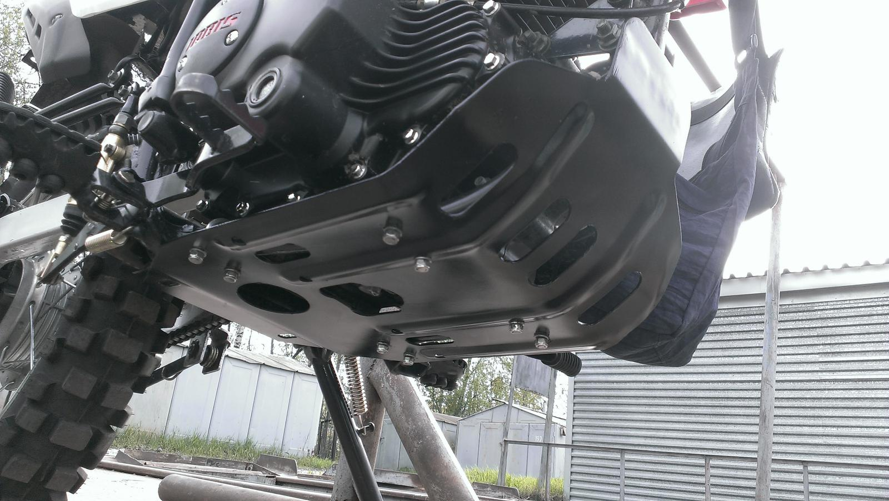

Из основных и самых доступных модификаций мотоцикла можно выделить установку центрального кофра, а также защиты картера
Центральный кофр предоставляет дополнительное место для хранения, что особенно важно для дальних поездок или ежедневных поездок по городу. С его помощью можно безопасно перевозить личные вещи, инструменты или экипировку. Он крепится на задний багажник, обеспечивая надежную фиксацию и легкий доступ к содержимому.
Защита картера является важной модификацией для тех, кто часто использует мотоцикл на бездорожье или по неровным маршрутам. Она предохраняет двигатель и нижнюю часть мотоцикла от повреждений при столкновениях с камнями, корнями и прочими препятствиями. Изготовленная из прочного металла или алюминия, защита картера надежно оберегает важные узлы от ударов.
